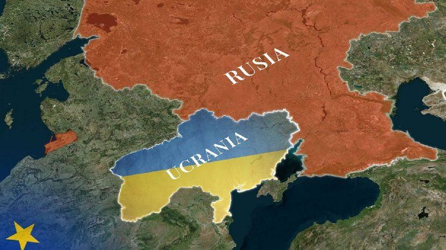

Conflicto Rusia y Ucrania
Intereses Politicoss
Las tensiones entre Rusia y Ucrania tienen una historia que se remonta a la Edad Media. Ambos países tienen raíces comunes en el Estado
eslavo oriental de Kievan Rus. Por esta razón, el presidente ruso, Vladimir Putin, habla siempre de "un solo pueblo". En realidad, los
estinos de ambas naciones estuvieron separados durante siglos, surgieron dos idiomas y culturas. Mientras Rusia se convirtió políticamen
e en un imperio, Ucrania no logró establecer su propio Estado. En el siglo XVII, grandes áreas de la actual Ucrania formaron parte del
Imperio ruso. Tras su desmoronamiento en 1917, Ucrania se independizó por poco tiempo, hasta que la Rusia soviética reconquistó el país.
Década de 1990: Rusia deja ir a Ucrania
En diciembre de 1991, Ucrania, junto con Rusia y Bielorrusia, fue una de las tres repúblicas que sellaron la disolución de la Unión
Soviética. Moscú quería conservar su influencia y vio, entre otras cosas, en la creación de la Comunidad de Estados Independientes
(CEI), un instrumento para lograrlo. En el Kremlin, también creían que el suministro de gas barato sería una manera de controlar al
país vecino. Pero no fue así, mientras Rusia y Bielorrusia formaron una estrecha alianza, Ucrania tenía la mirada puesta en Occidente.
Al Kremlin le desagradó esa postura, pero no hubo conflicto en la década de 1990. Moscú no estaba preocupado, porque Occidente no quería
integrar a Ucrania. La propia Rusia estaba económicamente debilitada, entre otras cosas también por las guerras de Chechenia. En 1997,
Moscú reconoció, con la firma del llamado "Gran Tratado", las fronteras de Ucrania, incluida la mayoría étnica rusa que habitaba la península de Crimea.
Interes Territorial
“Ucrania es la frontera occidental de Rusia. Cuando fueron atacados desde el oeste durante la Primera Guerra Mundial y la Segunda Guerra
Mundial fue el territorio de Ucrania lo que los salvó. Tenían que recorrer más de 1.000 millas (1.600 kilómetros) para llegar a Moscú.
Si Ucrania está en manos de la OTAN. Moscú está quizás a 400 millas de distancia (640 kilómetros). Así que Ucrania ha sido parte de lo que
los ha salvado desde Napoleón en adelante. Es una zona de seguridad que deben tener”, señala.
Toal indica que desde Moscú se tiene la percepción de que están siendo cercados por una alianza enemiga, algo que genera preocupación
en las grandes potencias.
Armamento de Rusia
En concreto, Rusia tiene 1.201 aviones de combate, 1 portaviones, 10 fragatas, 12 submarinos, 2.600 tanques de batalla y 5.125 vehículos
blindados.
Por su parte, la OTAN dispone de 3.891 aviones de combate, 13 portaviones, 122 fragatas, 22 submarinos, 9.460 tanques de batalla y 10.815
vehículos blindados. Unas cifras muy superiores si se comparan con el Ejército ruso.
Sin embargo, el coronel Pedro Baños Bajo ha asegurado en Al Rojo Vivo que Rusia cuenta con unas 6.000 o 7.000 cabezas nucleares, parte de
ellas almacenadas y otras, listas para ser activadas. Asimismo, ha destacado que el país ha entrenado a todo su ejército en Siria, donde
han experimentado con 200 nuevas armas, cuyo alcance y poder se desconocen.
